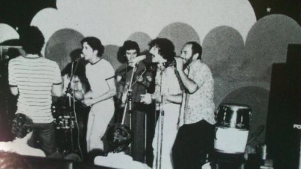
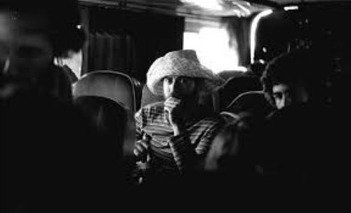
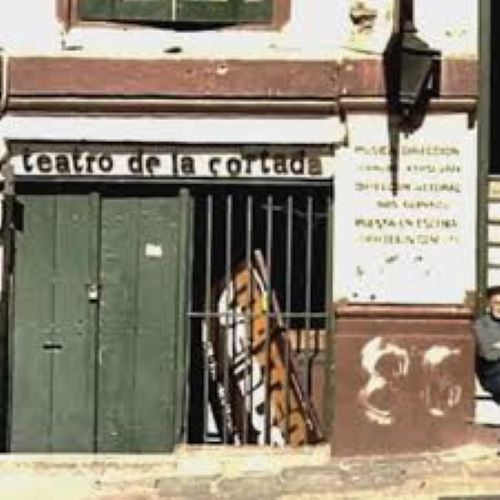
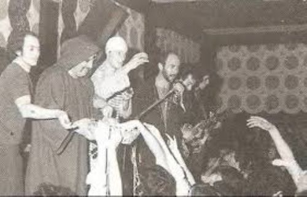
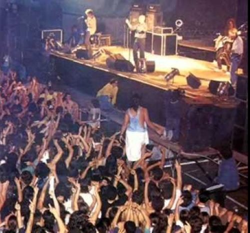
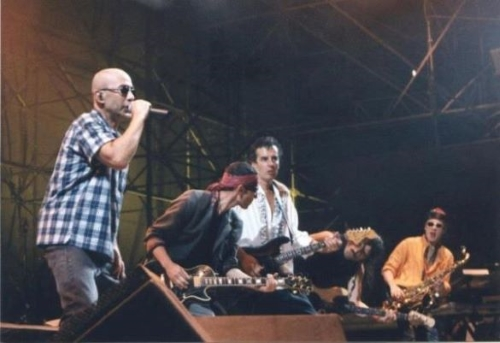
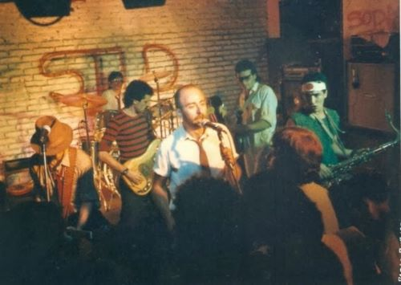

Inicio Integrantes Álbumes Entrevistas Recitales Galería Frases
El sábado 26 de noviembre de 1977 fue el concierto fundacional de Patricio Rey y sus Redonditos de Ricota, aunque todavía no se llamaban así. El show fue en el Teatro Lozano. Luego hubo al menos otros dos conciertos en ese lugar. Los eventos pasaron a la posteridad como «Los Lozanazos»: unas fiestas muy locas en las que un grupo de amigos subía al escenario y compartía con el resto lo que sabía hacer, o lo que se le ocurría. En un contexto de terror y dolor, los incipientes Redonditos de Ricota rompian la monotonía.
En enero de 1978 bautizan el grupo como «Patricio Rey y sus Redonditos de Ricota» y emprenden un alucinante viaje a Salta. Las aventuras que vivieron los cambió, y produjo una necesaria depuración en la banda. En este video recordamos el histórico recital en Salta, el viaje a Cafayate, la muerte del guitarrista Ricado Meyer, la vuelta a La Plata y los homenajes que se realizaron al cumplirse 45 años. En su libro, el Indio contó que “el concierto en sí mismo fue un desastre. Había más gente arriba del escenario que abajo. Pero de todos modos armamos la clase de quilombo que era nuestra especialidad”.
Para despedir el año 1978, Patricio Rey y sus Redonditos de Ricota convocó a sus fieles al «Teatro de la Cortada», un pequeño recinto que años más tarde fue rebautizado como «Centro Parakultural». El lugar quedaba en Venezuela 336 de la Ciudad de Buenos Aires. El show se celebró el 30 de diciembre de 1978, y afortunadamente existe registro sonoro.
El viernes 10 de noviembre de 1978 Los Redondos se presentaron por primera y única vez en la Sala Monserrat. Pese a que era la segunda presentación del grupo en la ciudad de Buenos Aires, la sala estuvo repleta. El público todo el tiempo se trepaba al escenario y eso les dificultaba a los artistas el desarrollo del espectáculo. Hubo piñata, redonditos de ricota, rock y hasta un kilo de milanesas que desapareció.
El viernes 18 de agosto de 1978 Los Redondos tocaron por primera vez en la Capital Federal, en un pequeño teatro llamado «Centro de Artes y Música», ubicado en la calle Cerrito 228. Fue una noche disparatada que sorprendió a todos los que estuvieron presentes. El grupo había reservado dos fechas consecutivas, pero los dueños de la sala, luego de ver la performance del viernes se asustaron y decidieron suspender el concierto del sábado.
El 19 de diciembre de 1998 Patricio Rey y sus Redonditos de Ricota brindó su segundo show en el Estadio de Racing Club, en la localidad de Avellaneda. El concierto corresponde a la gira en la que la banda presentó el disco Último bondi a Finisterre.
Esa noche se juntaron 150, 200 personas para disfrutar el show de Patricio Rey en el Stud Free, en el año 1985. El audio registrado en ese concierto es una de las mejores grabaciones «piratas» de los shows de Los Redondos… se escucha tan bien que algunos sugieren que no es un audio pirata, sino una grabación que difundió la propia banda para popularizarse. Algo similar al disco «En Directo», pero lanzado diez años antes. Otra versión indica que esas grabaciones de consola fueron realizadas por el sonidista de la banca. Tiempo después sufrió un robo y todas esas cintas desaparecieron… hasta que volvieron a salir a la luz a través de internet.
